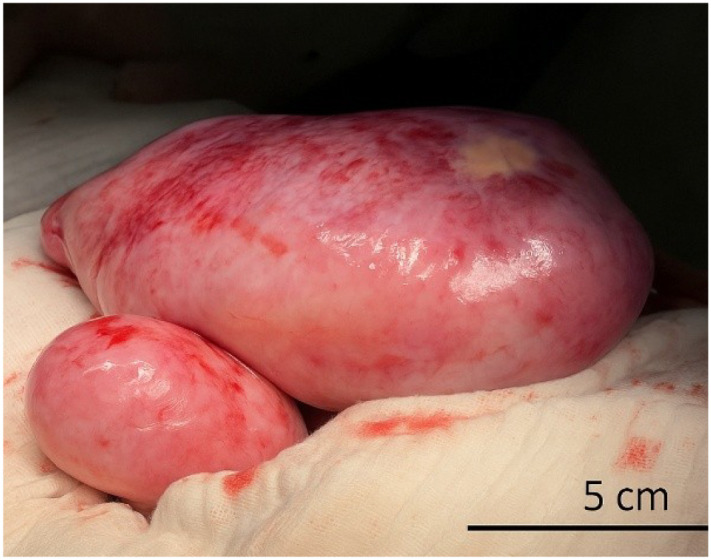
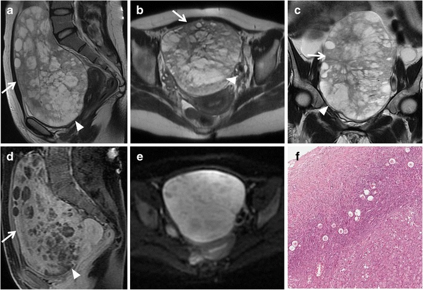
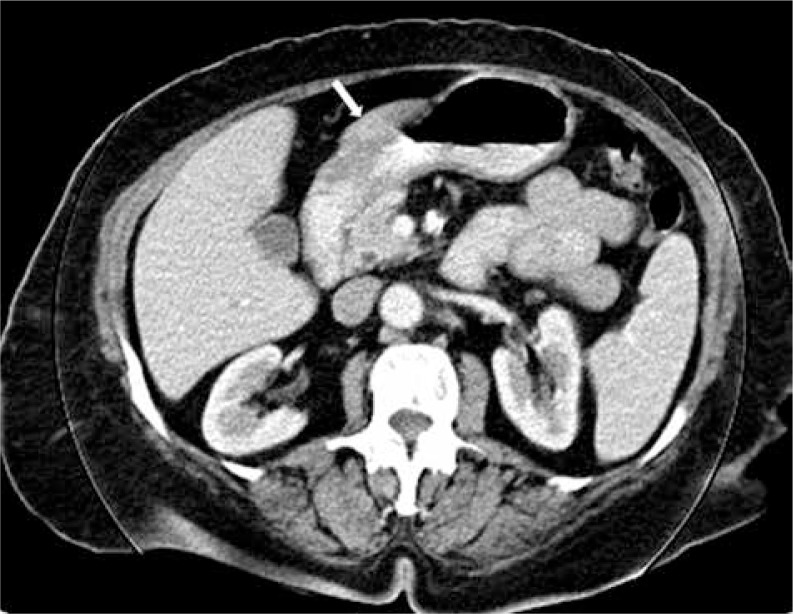
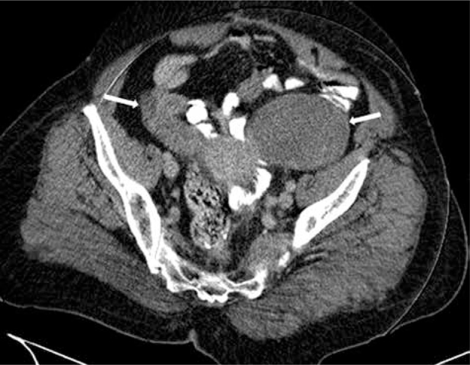
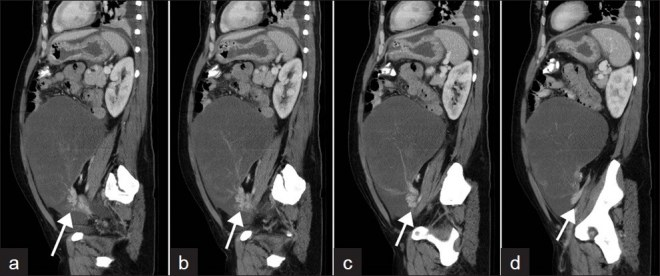
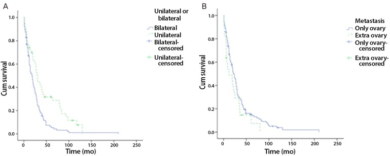

3116 — Di căn buồng trứng Krukenberg: khối hai bên, T2 tối, và cái bẫy "u buồng trứng nguyên phát" / Krukenberg tumour
Tags: pattern:di-can pattern:khoi-dac-hai-ben pattern:nang-trong-dac vung:buong-trung vung:da-day score:O-RADS score:PCI protocol:MRI-chau protocol:CT-bung protocol:PET-CT
Mức chắc chắn (certainty): tổng hợp y văn (literature synthesis) — ghép tổng quan chọn bệnh nhân mổ 2024 (Nistor & Soleymani Majd, Transl Cancer Res, PMC11543025), đoàn hệ 156 ca có sống thực (Jeung et al., Obstet Gynecol Sci 2015, PMC4303750), ca nguyên văn MRI 23 tuổi có ảnh (Foti et al., Insights Imaging 2016, PMC4729709), ca 18 tuổi hai bên có ảnh CT/đại thể (Boiangiu et al., Front Oncol 2026, PMC12971399), ca xoắn buồng trứng có ảnh CT (Sandhu et al., J Clin Imaging Sci 2012, PMC3307215), loạt 8 ca có ảnh CT (Uyeturk et al., Contemp Oncol 2013, PMC3934036) và so sánh MRI định lượng di căn ruột thừa vs u nhầy nguyên phát (Kawaguchi et al., Jpn J Radiol 2026, PMC13400669). Nhóm không có bệnh nhân của mình; mọi tỷ lệ dưới đây là của các loạt hồi cứu, không phải ước lượng chắc chắn.
Câu chốt: Krukenberg là di căn buồng trứng từ ống tiêu hóa, mô học đặc trưng là tế bào nhẫn (signet-ring cell) chứa nhầy + tăng sinh mô đệm buồng trứng. Trên hình ảnh, chốt không phải "khối to" mà là HAI BÊN (67,3–80%) + phần đặc T2 trung–thấp do xơ hóa mô đệm + DWI sáng, và ổ nguyên phát chỉ được biết trước ở 20–30% ca. Điều trị khác hẳn u buồng trứng nguyên phát: không cắt tử cung + hai phần phụ theo phác đồ HGSOC, mà là cắt phần phụ ± mổ triệt căn ổ nguyên phát + hóa trị toàn thân; chỉ R0 mới kéo dài sống (11 vs 10 tháng so với còn u đại thể).
1. Tổng quan bệnh học – cơ chế hình ảnh (TẠI SAO)
1.1 Định nghĩa và đường lan
- Định nghĩa mô học (Krukenberg 1896): di căn buồng trứng gồm tế bào nhẫn chứa nhầy nằm trong mô đệm buồng trứng tăng sinh. Trong thực hành, tên này được dùng rộng cho di căn buồng trứng từ đường tiêu hóa (chủ yếu dạ dày, đại tràng, ruột thừa), và đôi khi cả từ đường mật – tụy.
- Đường lan: chủ yếu bạch huyết ngược dòng theo trục dạ dày – buồng trứng, ngoài ra gieo rắc phúc mạc (transcoelomic) và đường máu. Buồng trứng là "đất tốt": mạng mạch – bạch mạch phong phú, mô đệm đáp ứng nội tiết → tế bào u sống và kích thích mô đệm xơ hóa.
- Vì sao ung thư dạ dày thể tế bào nhẫn "thích" buồng trứng: tế bào mất liên kết (mất E-cadherin), di chuyển rời rạc, tiết nhầy; nhầy vừa là ổ chứa tín hiệu T2 cao, vừa là vật liệu kích thích xơ → khối có hai thành phần tương phản trên MRI.
- Vì sao chẩn đoán muộn: chỉ 20–30% ca có tiền sử u nguyên phát đã biết khi khối buồng trứng xuất hiện; u dạ dày nguyên phát có thể nhỏ, chỉ dày thành 9–11 mm và không gây triệu chứng (ca 18 tuổi: thành hang vị 9 mm, bờ cong lớn 11 mm).
1.2 Vật lý hình ảnh — T2, DWI/ADC và HU
- T2 tối = collagen, không phải sắt/máu: mô đệm xơ – desmoplastic có collagen liên kết chặt, ít proton tự do → T2 ngắn, tín hiệu thấp. Phần nhầy (mucin) ngoại bào giữ nước → T2 rất cao. Vì vậy Krukenberg điển hình có "đảo đặc tối" nằm trong "hồ nang sáng", không phải một khối đồng nhất.
- Cảnh báo đọc đúng: "T2 tối" là tương đối so với nước/mỡ; so với cơ, phần đặc vẫn có thể sáng hơn (trong loạt di căn ruột thừa: tỷ số tín hiệu T2 của phần đặc 4,15 lần cơ). Đừng lấy "tối hơn cơ" làm tiêu chuẩn — sẽ bỏ sót.
- DWI/ADC: phần đặc giàu tế bào → b=800–1000 sáng, ADC thấp. Nhưng nhầy làm ADC tăng (hiệu ứng T2 shine-through): trong so sánh trực tiếp, ADC phần đặc của di căn 1,45 [1,26–1,49] vs u nhầy buồng trứng nguyên phát 1,09 [1,05–1,36] ×10⁻³ mm²/s (p = 0,052) — ADC không phân biệt được, và chiều cao hơn ở di căn là ngược trực giác. Vì vậy không dùng ADC một mình để chốt lành/ác hay nguyên phát/di căn.
- HU trên CT: phần nang nhầy đo được 8–14 HU (ca 2012) — gần nước, không phải mỡ (mỡ −40 đến −120 HU) và không phải máu (35–70 HU). Phần đặc có vỏ/vách ngấm thuốc; mức ngấm thường thấp hơn nhu mô buồng trứng bình thường vì khối nghèo mạch, xơ nhiều.
- TẠI SAO hai bên lại quan trọng: gieo rắc qua bạch huyết và phúc mạc không chừa một bên; u nguyên phát biểu mô buồng trứng thường một bên (trừ HGSOC di truyền). Nhưng một bên không loại trừ di căn: 32,7% Krukenberg trong đoàn hệ 156 ca là một bên.
1.3 Số liệu trụ cột (bắt buộc nhớ)
| Chỉ số | Số liệu | Nguồn |
|---|---|---|
| Tần suất di căn trong u buồng trứng | 1–2% ở phương Tây; tới 17% ở Nhật (nơi ung thư dạ dày phổ biến) | PMC11543025 |
| Ung thư dạ dày di căn buồng trứng | 0,3–6,7% | PMC11543025 |
| Ổ nguyên phát hay gặp nhất | dạ dày ~70%; loạt gần đây: đại tràng 45,31% vs dạ dày 32,03% | PMC12971399 |
| Hai bên | 80% (tổng quan) · 67,3% (156 ca) · ~75% (di căn từ vú) | PMC11543025 · PMC4303750 · PMC12002769 |
| Tuổi | trung bình 45,8; 67,3% tiền mãn kinh | PMC4303750 |
| Sống toàn bộ trung vị | 9–50 tháng (tổng quan) · 22,7 tháng (156 ca) | PMC11543025 · PMC4303750 |
| Theo ổ nguyên phát | vú 31 · đại tràng 21,5 · dạ dày 11 tháng | PMC12971399 |
| Một bên vs hai bên | 31,7 vs 19,3 tháng (p = 0,001) | PMC4303750 |
| Dịch ổ bụng | 59% ca; HR tử vong 4,82 khi có dịch | PMC4303750 · PMC11543025 |
| Mổ R0 vs còn u | 11 vs 10 tháng (R1/R2 không hơn không mổ) | PMC11543025 |

Hai buồng trứng bị thay hoàn toàn bởi khối u nhẵn, nhiều múi (phải ~25 × 10 cm, trái ~10 × 8 cm) ở bệnh nhân 18 tuổi ung thư dạ dày tế bào nhấn. Bề mặt nhẵn, ít dính là điểm khác với u buồng trứng nguyên phát gieo mạc nối. Boiangiu A et al., Front Oncol 2026 (PMC12971399), Fig. 3, CC BY 4.0 — nguyên bản.2. Mẫu hình + chẩn đoán phân biệt theo vị trí (Gamut)
- Khuôn 1 — Nữ 30–60 tuổi, khối phần phụ HAI BÊN, đặc hoặc đặc–nang, giữ hình dạng buồng trứng, ± dịch ổ bụng. Gamut theo ổ nguyên phát: dạ dày (tế bào nhẫn, hay gặp nhất) → đại tràng/ruột thừa → vú (thể tiểu thùy) → đường mật, tụy, ruột non, cổ tử cung, bàng quang/ống niệu rốn.
- Khuôn 2 — Khối một bên rất lớn, nhiều nang nhầy, "ô kính màu" trên T1. Gamut nghiêng u nhầy buồng trứng nguyên phát/biên (mucinous borderline) hoặc di căn ruột thừa (LAMN) — phân biệt bằng kích thước (di căn nhỏ hơn), vách mờ, CEA (bài 134).
- Khuôn 3 — Khối phần phụ + đau bụng cấp + dấu "xoáy nước" (swirl sign) ở cuống. Chẩn đoán là xoắn buồng trứng trên nền khối u — Krukenberg to, nặng (2.475 g trong ca 2012) là điểm tựa xoắn; xoắn không loại trừ ác tính và không làm mất chỉ định mô học.
- Mnemonic "KOPF": Krukenberg (dạ dày) · Ovary giữ dạng · Peritoneal deposits (gieo phúc mạc) · Fibrotic stroma (T2 tối). Dùng để nhớ 4 trục: ổ nguyên phát, hình dạng, lan phúc mạc, mô đệm xơ.
- Vị trí "giữ hình dạng buồng trứng" quan trọng thế nào: tế bào u thấm vào mô đệm buồng trứng thay vì phá vỡ vỏ → khối vẫn hình bầu dục/múi như buồng trứng to, khác u biểu mô nguyên phát thường phá vỏ, có nhú trong nang, dính và gieo mạc nối sớm.
3. Bảng so sánh phân biệt (ma trận đối chiếu)
| Thực thể (entity) | Hình ảnh điển hình | Chốt vào (rule-in) | Chốt loại (rule-out) | Gợi ý xác nhận |
|---|---|---|---|---|
| Krukenberg dạ dày – đại tràng | Hai bên, đặc/đặc–nang, giữ dạng buồng trứng, phần đặc T2 trung–thấp, DWI sáng, vách/vỏ ngấm thuốc | Hai bên + giữ dạng + T2 tối + CEA tăng + ổ tiêu hóa | Một bên, thuần nang, "ô kính màu" T1 → nghĩ u nhầy nguyên phát | Nội soi tiêu hóa + sinh thiết; IHC CK20+/CDX2+/PAX8− |
| Di căn vú thể tiểu thùy | Hai bên, đặc, giảm mạch, ± bánh mạc nối; có thể buồng trứng không to | Tiền sử ILC + hai bên + ER/PR dương | Không có tiền sử, một bên, HGSOC điển hình | IHC GATA3+, ER+, PAX8±, mất E-cadherin (bài 1649) |
| U nhầy buồng trứng nguyên phát (POMC) | Một bên, rất lớn (trung vị 182 mm), nhiều ngăn, "ô kính màu" 72%, T1 sáng | Kích thước > 152 mm + ô kính màu + CA19-9 | Hai bên, vách mờ > 50%, CEA cao → nghĩ di căn | Cắt u + IHC; không mổ như HGSOC khi chưa loại trừ di căn |
| Di căn ruột thừa (LAMN/OMAT) | Hai bên 29%, nhỏ hơn (129 mm), vách mờ 94%, CEA 22 ng/mL, ADC 1,45 | Vách mờ + CEA cao + dịch nhầy phúc mạc | Ô kính màu + T1 sáng + CA19-9 cao → POMC | Nội soi/CT đại tràng, sinh thiết ruột thừa (bài 134) |
| HGSOC nguyên phát | Hai bên được (di truyền), đặc–nang có nhú, dịch ổ bụng nhiều, gieo mạc nối | Nhú trong nang + CA-125 rất cao + gieo mạc nối | Giữ dạng buồng trứng + T2 tối + ổ tiêu hóa → Krukenberg | IHC PAX8+/WT1+/CK7+, CDX2−; CA-125 không phân biệt được |
| U xơ – u tế bào hạt (fibroma/fibrothecoma) | Đặc, T2 rất tối, DWI tối, ngấm thuốc chậm | T2 tối + DWI tối + không hạn chế khuếch tán | DWI sáng + ADC thấp + hai bên tiến triển → ác/di căn | O-RADS MRI 2 khi T2 tối + DWI tối; theo dõi |
| Xoắn buồng trứng trên khối u | Khối lớn + swirl sign cuống, thành dày, không ngấm thuốc vùng xoắn | Swirl sign + đau cấp + khối lớn | Swirl âm tính không loại trừ xoắn từng lúc | Siêu âm Doppler + CT/MRI; mổ cấp (bài 1742) |
- Ba con số phân biệt hữu ích (từ so sánh MRI định lượng): kích thước 129 vs 182 mm (AUC 0,77; cutoff ≤ 152 mm cho sens 78%, spec 81%); CEA 22 vs 6,5 ng/mL (p < 0,001); CA-125 157 vs 64 U/mL (p = 0,33 — không phân biệt). Nghĩa là: CEA và kích thước hữu ích, CA-125 thì không.
4. Protocol chụp + phân độ/điểm chuẩn hóa
- CT bụng – châu có cản quang (thì tĩnh mạch cửa), lát ≤ 1 mm: đánh giá thành dạ dày (bình thường khi bụng căng < 5 mm; ca bệnh đo 9 mm và 11 mm), hạch, gieo phúc mạc, PCI. Uống nước làm căng dạ dày trước chụp — không có nước, thành dày giả.
- MRI tiểu khung (chuẩn vàng cho khối phần phụ): T2 FSE 3 bình diện + T1 + T1 fat-sat + DWI b = 0/800–1000 + ADC + T1 fat-sat sau tiêm động học (DCE); thuốc chống nhu động. Đo phần đặc (bỏ vùng hoại tử/nang) để lấy ADC; ghi kích thước, số nang, vách, tín hiệu T1 của nang lớn nhất.
- T1 fat-sat là bắt buộc: phân biệt máu/mỡ (T1 sáng, không mất tín hiệu) với nhầy (T1 trung–thấp) — quyết định hướng u nhầy nguyên phát hay di căn.
- PET-CT FDG: tìm ổ nguyên phát ẩn và di căn ngoài phúc mạc khi CT/MRI âm tính; không thay thế nội soi + mô học; giá trị thấp với u nhầy (FDG kém).
- Xét nghiệm – mô học: CEA (hữu ích), CA19-9, CA-125 (không phân biệt), CA15-3 nếu nghi vú; nội soi dạ dày – đại tràng ở mọi khối buồng trứng đặc/nhầy không rõ nguồn; IHC CK7, CK20, CDX2, PAX8, SATB2, ER/PR, GATA3.
- Phân độ: O-RADS MRI (ACR) — khối có thành phần đặc ngấm thuốc thuộc nhóm nguy cơ cao (O-RADS 5), chuyển hội chẩn ung thư phụ khoa, không mổ cấp cứu trừ khi xoắn/vỡ. Với ung thư dạ dày – đại tràng lan phúc mạc, dùng PCI (Peritoneal Cancer Index): PCI ≥ 16 là yếu tố tiên lượng xấu trong tổng quan.
flowchart TD
A[Khoi phan phu dac hoac dac-nang] --> B{Hai ben?}
B -->|Co| C[Nghi di can Krukenberg]
B -->|Khong| D[Van co the di can]
C --> E[Noi soi da day - dai trang + CEA]
D --> E
E --> F{Tim duoc o nguyen phat?}
F -->|Co| G[Sinh thiet buong trung + IHC]
F -->|Khong| H[PET-CT + MRI vu + CA15-3]
G --> I{PAX8 duong va CDX2 am?}
I -->|Co| J[U buong trung nguyen phat]
I -->|Khong| K[Di can - dieu tri theo o nguyen phat]
H --> G
5. Biến thể bình thường và cạm bẫy
- "Khối hai bên" không đồng nghĩa Krukenberg: u tế bào hạt, lymphoma, lao phúc mạc, HGSOC di truyền cũng hai bên. Chốt bằng mô học + IHC, không bằng hình thái.
- Cạm bẫy ADC: nhầy làm ADC cao; một khối "ADC không thấp" vẫn có thể là di căn nhầy. Trong so sánh trực tiếp, ADC di căn cao hơn u nhầy nguyên phát (1,45 vs 1,09) — đừng dùng ADC để loại di căn.
- Cạm bẫy "một bên": 32,7% Krukenberg một bên; không loại trừ chỉ vì một bên.
- Cạm bẫy "tiền sử": 70–80% ca không có tiền sử u nguyên phát khi khối buồng trứng được phát hiện; thiếu tiền sử không cho phép mặc định nguyên phát.
- Cạm bẫy "buồng trứng bình thường": ở di căn vú thể tiểu thùy, tế bào u nằm trong mô đệm nên buồng trứng có thể không to; siêu âm/CT âm tính không loại trừ (bài 1649).
- Cạm bẫy mổ oan: gọi Krukenberg là "u buồng trứng nguyên phát" dẫn tới cắt tử cung + hai phần phụ + mạc nối theo phác đồ HGSOC trong khi bệnh là di căn giai đoạn IV — mổ lớn không kéo dài sống nếu không đạt R0 (R1/R2 = 10 tháng, tương đương không mổ: 11 tháng).
- Cạm bẫy "satisfaction of search": thấy khối buồng trứng to rồi dừng, bỏ sót thành dạ dày dày 9 mm. Đọc CT phải cuộn hết dạ dày – đại tràng và ghi độ dày thành.
- Cạm bẫy xoắn: khối Krukenberg lớn, nặng dễ xoắn; swirl sign chỉ thấy trên vài lát liên tiếp — phải xem nhiều mặt cắt qua cuống, không chỉ một lát.
6. Tự lượng giá — Blind Quiz
Ca 1 — Nữ 23 tuổi, bụng to 3 tháng, chưa biết u nguyên phát. Xem MRI trước, mô tả tín hiệu.

- Hỏi: (1) Phần đặc và phần nang có tín hiệu T2 gì? Vì sao khác nhau? (2) DWI nói gì? (3) Ba chẩn đoán phân biệt và bước tiếp theo?
Bấm để hiện đáp án (findings + chẩn đoán)
- Findings: khối lớn nhiều múi thay gần hết buồng trứng; phần đặc/vách T2 trung–thấp (mũi tên trắng) xen các ổ nang T2 rất cao (đầu mũi tên); T1 sau tiêm fat-sat: phần đặc ngấm thuốc; DWI b = 800 sáng ở phần đặc; mô học: tế bào nhẫn chứa nhầy trong mô đệm.
- Chẩn đoán: Krukenberg từ ung thư dạ dày. Giải thích: mô đệm xơ → T2 tối; hồ nhầy → T2 sáng; tế bào đặc → DWI sáng.
- Phân biệt: u nhầy buồng trứng nguyên phát (một bên, rất lớn, "ô kính màu" T1), HGSOC (nhú trong nang, CA-125 rất cao), lymphoma/lao phúc mạc.
- Bước tiếp: nội soi dạ dày + sinh thiết, CEA, IHC CK20/CDX2/PAX8 — không mổ như u nguyên phát khi chưa loại trừ di căn.
- Nguồn ảnh: Foti PV et al., Insights Imaging 2016 (PMC4729709), Fig. 9, CC BY 4.0 — nguyên bản, không crop/ghép.
Ca 2 — Nữ 52 tuổi, đau bụng âm ỉ, CT bụng–châu có cản quang. Hai ảnh: bụng trên và tiểu khung.


- Hỏi: ổ nguyên phát nằm ở đâu? Vì sao hai khối tiểu khung có tỷ trọng thấp? Cần đo gì trên CT?
Bấm để hiện đáp án
- Findings: (a) thành dạ dày dày không đều, bờ trong nham nhở ở bờ cong nhỏ/hang vị (mũi tên) — nghi ung thư dạ dày; (b) hai khối phần phụ đối xứng, tỷ trọng thấp, bờ đều, vách/vỏ mỏng ngấm thuốc (mũi tên).
- Chẩn đoán: ung thư dạ dày di căn buồng trứng hai bên (Krukenberg). Tỷ trọng thấp 8–14 HU = nhầy, không phải mỡ (−40 đến −120 HU) hay máu (35–70 HU).
- Cần đo: độ dày thành dạ dày (bình thường < 5 mm khi căng; ca này dày bất thường), kích thước khối, hạch, dịch ổ bụng, PCI.
- Nguồn ảnh: Uyeturk U et al., Contemp Oncol 2013 (PMC3934036), Fig. 1–2, CC BY-NC-ND 3.0 — nguyên bản.
Ca 3 — Nữ 41 tuổi, khối bụng rất lớn, đau cấp. CT bụng–châu: bốn lát sagittal liên tiếp.

- Hỏi: dấu hiệu ở cuống là gì? Nó thay đổi xử trí thế nào? Khối nang 21,6 cm này có thể là gì?
Bấm để hiện đáp án
- Findings: dấu "xoáy nước" (swirl sign) — mạch máu/mô mỡ cuống buồng trứng xoắn thành hình xoáy (mũi tên trắng) trên các lát liên tiếp; khối nang lớn, thành mỏng, nhiều vách, tỷ trọng 8–14 HU.
- Chẩn đoán: xoắn buồng trứng trên khối Krukenberg (ca gốc: khối trái 21,6 × 11,7 × 22,8 cm; khối phải đặc 5,3 × 6,5 × 5,4 cm có vỏ ngấm thuốc; u dạ dày nguyên phát; buồng trứng cắt nặng 2.475 g).
- Xử trí: mổ cấp vì xoắn, nhưng vẫn phải lấy mô học và không mặc định lành chỉ vì khối "chủ yếu nang".
- Nguồn ảnh: Sandhu S et al., J Clin Imaging Sci 2012 (PMC3307215), Fig. 5, CC BY-NC-SA 3.0 — nguyên bản.
Ca 4 — Nhìn biểu đồ sống thực, trả lời trước khi mở đáp án.

- Hỏi: đường nào là hai bên? Hai bên làm tiên lượng xấu hơn bao nhiêu? Điều này có làm thay đổi chỉ định mổ không?
Bấm để hiện đáp án
- Findings: đường hai bên (bilateral) tụt nhanh hơn rõ rệt; sống trung bình 19,3 tháng so với 31,7 tháng ở một bên (p = 0,001).
- Ý nghĩa: hai bên là yếu tố tiên lượng xấu, nhưng không phải chống chỉ định mổ: chỉ định dựa trên khả năng đạt R0 và tình trạng toàn thân, không dựa trên số bên.
- Nguồn ảnh: Jeung YJ et al., Obstet Gynecol Sci 2015 (PMC4303750), Fig. 4, CC BY-NC 3.0 — nguyên bản.
Bài liên quan chéo
- 535 – Ung thư buồng trứng, gieo rắc phúc mạc & u Krukenberg (bài tổng quan hệ: FIGO, PCI, bánh mạc nối)
- 1649 – Di căn buồng trứng của ung thư vú (thể tiểu thùy, buồng trứng không to, "black scrunchie")
- 134 – U nhầy ruột thừa chưa vỡ & di căn buồng trứng (LAMN vs u nhầy nguyên phát)
- 539 – Pseudomyxoma peritonei (dịch nhầy phúc mạc, PCI)
- 1742 – Xoắn buồng trứng & OHSS (swirl sign, chỉ định mổ)
- 1950 – Cố định buồng trứng sau tháo xoắn
- 577 – Theo dõi tái phát ung thư phụ khoa
Ảnh
3116_krukenberg_MRI_PMC4729709-Fig9.jpg— MRI 6 ô (T2 sagittal/axial/coronal, T1 sau tiêm, DWI, mô học), CC BY 4.0.3116_nguyen-phat-da-day_CT_PMC3934036-Fig1.jpg— CT dạ dày nguyên phát, CC BY-NC-ND 3.0.3116_krukenberg_CT_PMC3934036-Fig2.jpg— CT hai khối phần phụ, CC BY-NC-ND 3.0.3116_xoan-vong-buong-trung_CT_PMC3307215-Fig5.jpg— swirl sign, CC BY-NC-SA 3.0.3116_hai-ben-dai-the_Intraop_PMC12971399-Fig3.jpg— đại thể hai bên, CC BY 4.0.3116_song-thon_Chart_PMC4303750-Fig4.jpg— Kaplan–Meier, CC BY-NC 3.0.- Nguồn + giấy phép từng ảnh:
images/CREDITS.md.
Không dùng để chẩn đoán độc lập khi chưa có người hướng dẫn.